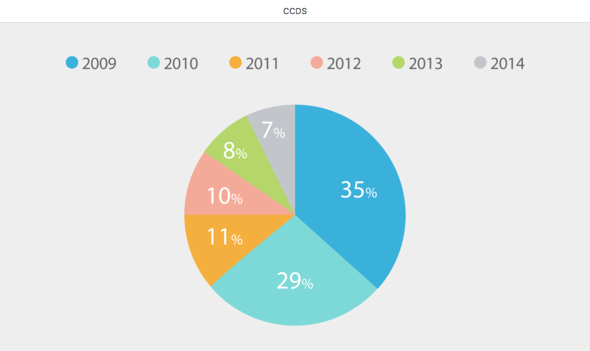
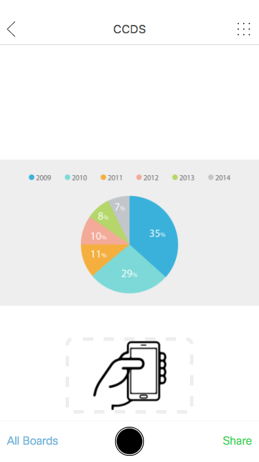

3D Gyroscope
Most of the model mobile has a 3D Gyroscope in it. With the Gyroscope, we can trace the movement of the device to some extent.
Prototype
Desktop
link
https://uxccds.github.io/SparkMobile/pair/page/wall.html
usage
1) Please use Chrome to open this prototype.
2) Wait for the loading and open the mobile protoype when you see the following screen.

Mobile
link
https://uxccds.github.io/SparkMobile/pair/page/phone.html
usage
1) Please install the prototype as web app on your iPhone.

2) Tap and hold on the area marked on the prototype.
3) Then turn your wrist.
4) You will see a dot moving on the desktop prototype.